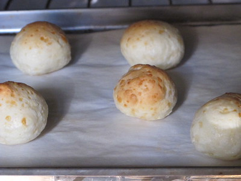
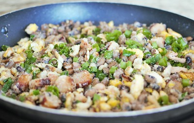

Culinária
Dentre todas as riquezas de Minas uma das mais marcantes é a culinária, com influências indígenas,
africana e europeia surgem
pratos inesquecíveis. Nesta seção vamos trazer alguns pratos típicos de Minas e um pouco da história
deles.
Pão de queijo
O pão de queijo se originou em Minas Gerais, segundo uma reportagem G1, o pão de queijo surgiu numa época em que a farinha era de baixa qualidade, entao utilizava-se o polvilho, e havia abundância de queijo, então a junção do queijo e do polvilho levou a invenção de uma das receitas mais marcantes de Minas. Segue abaixo uma receita de pão de queijo retirada do site Tudo Gostoso:
Ingredientes (40 porções)
- 500 g de polvilho doce
- 2 ovos
- 250 ml de leite integral
- 1/2 copo de óleo
- 1 colher/sopa rasa de sal
- 1 pacote de queijo ralado parmesão
- 1 prato cheio (350 g) de queijo meia cura e/ou mussarela ralado
Modo de Preparo
Primeiro, coloque o leite e o óleo em uma panela pra esquentar, desligue o fogo imediatamente assim que começar a ferver (você verá umas bolinhas do leite subindo). Em uma tigela grande, coloque o polvilho e o sal, e misture bem, logo em seguida, despeje o conteúdo da panela ainda quente, misture bem, primeiro com uma colher e depois com a mão. Em seguida coloque o queijo ralado e um pouco do queijo do prato e também 1 ovo, continue misturando bem. Coloque o resto do queijo e verifique se a massa esta com uma textura boa, nem muito oleosa e nem muito seca. Se você sentir que está muito seca, coloque outro ovo, se ela ficar oleosa, coloque mais um pouco de polvilho. Essa massa deverá soltar da tigela e também da sua mão. Experimente a massa e veja se esta boa de sal, algumas pessoas gostam de colocar um pouco mais de sal. Agora é só fazer bolinhas e colocar na assadeira, deixando um pequeno espaço entre um pão e o outro. Não é necessário untar a assadeira. Deixe no forno em temperatura média (230°) até dourar um pouco.

Feijão Tropeiro
O feijão tropeiro é uma receita que vem dos viajantes, chamados tropeiros, que eram responsáveis por trazer o alimento para Minas na época da exploração do ouro no território. Para se alimentarem durante a longa viagem os tropeiros preparavam um prato que tinha como base farinha de mandioca, feijão, ovos, cebola e toucinho.Segue abaixo uma receita de pão de queijo retirada do site Tudo de Gostoso:
Ingredientes (6 porções)
- 500g de feijão carioquinha cozido
- 200g de toucinho
- 1 concha de óleo
- 1 cebola média picada
- 4 dentes de alho
- 5 ovos
- 1 colher de sopa de sal com alho
- Cheiro verde a gosto
- 200g de farinha de mandioca
Modo de Preparo
Coloque o óleo em uma panela e doure a cebola, acrescente o bacon e frite bem. Adicione o alho, sal e os ovos, misturando com cuidado para que não se despedacem muito. Refogue o feijão, baixe o fogo, misture a farinha aos poucos e o cheiro verde.
